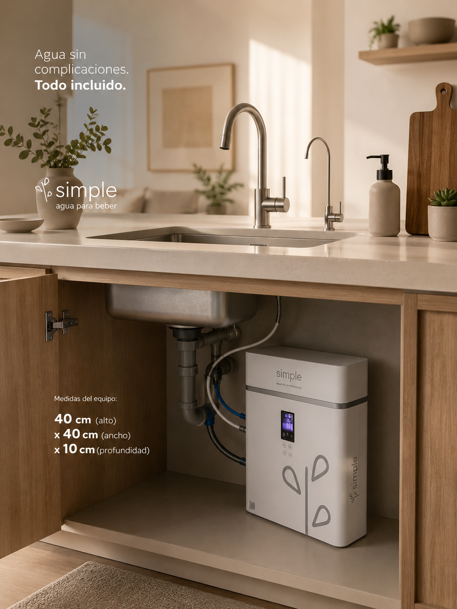

Respuestas claras antes de contratar.
Estas respuestas usan información de los materiales actuales. Los detalles operativos finales se validan antes de formalizar una instalación.

¿Qué incluye mi suscripción SIMPLE?
Incluye acceso al equipo, instalación, recambio de filtros, mantenimiento, monitoreo y soporte según disponibilidad operativa y condiciones del servicio.
¿El equipo requiere mantenimiento?
Sí. El mantenimiento y el recambio de cartuchos forman parte del servicio para que no tengas que comprar o coordinar piezas por tu cuenta.
¿Cómo se monitorea el sistema?
El equipo integra tarjeta IoT. Desde la app o portal se puede consultar consumo, estado del equipo y parámetros relacionados con la calidad del agua.
¿Cómo se contrata?
Puedes iniciar desde la app, el sitio web o con apoyo del equipo. Primero se valida cobertura y datos de instalación.
¿SIMPLE también atiende empresas?
Sí. SIMPLE cotiza soluciones para hogares, oficinas, empresas y espacios con necesidades particulares de consumo.
¿Puedo referir a alguien?
Sí. El programa contempla códigos únicos, links personalizados y seguimiento de referidos. Las recompensas se confirman al activar el referido.
¿La cobertura está disponible en cualquier zona?
La cobertura se valida por código postal, calidad del agua de la zona y condiciones operativas.
¿Qué certificaciones comunican los materiales de SIMPLE?
Los materiales comerciales comunican RoHS, WQA, NSF, FCC y CE. El alcance documental exacto debe confirmarse antes de publicarlo con mayor detalle técnico.